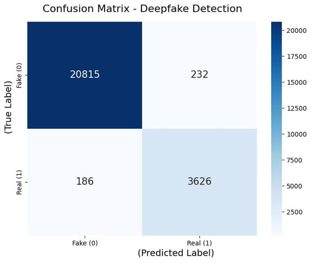
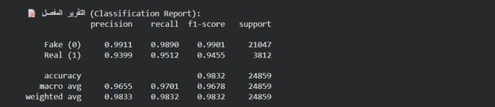
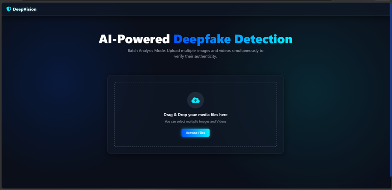
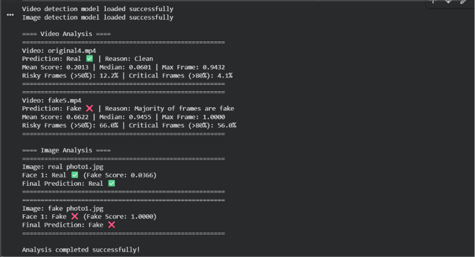
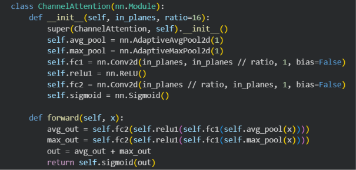
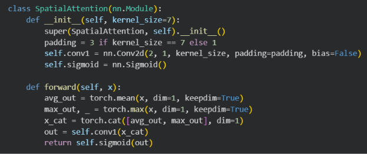
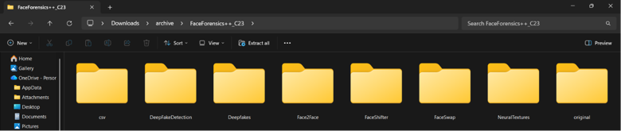

The rapid advancement of deep learning generative models (GANs and diffusion algorithms) has allowed threat actors to create hyper-realistic synthetic video and image manipulations with minimal effort. Deepfakes threaten organizational communications, executive identity verification, KYC onboarding, and judicial evidence.
Standard classification architectures struggle with real-world compressed video. Passing entire frames without facial isolation creates background noise, leading to catastrophic false alarms or missed manipulation artifacts along facial boundaries.
DeepVision solves this through an end-to-end multi-stage pipeline. The system strips away non-informative background pixels, resamples the facial crop with a 20% outer boundary margin, and feeds the normalized tensor through an EfficientNet-B4 backbone augmented with a Convolutional Block Attention Module (CBAM).
MediaPipe BlazeFace extracts candidate face coordinates with a calibrated 20% safety margin to capture hair/jaw blend edges.
Bilinear resampling to 224 × 224 RGB tensor with standard ImageNet mean and variance channel scaling.
EfficientNet-B4 extracts deep spatial representations, refined sequentially by Channel and Spatial Attention modules.
For video inputs, 50 uniformly spaced frames are processed to detect temporal flicker and anomaly bursts.
Sigmoid probability mapped to calibrated confidence percentage with Real vs. Fake classification verdict.
CBAM (Convolutional Block Attention Module) is integrated directly into the upper stages of the backbone:
Channel Attention: Uses both Global Average Pooling and Global Max Pooling simultaneously to aggregate channel-wise feature signals, routing them through a shared Multi-Layer Perceptron (MLP). This tells the model which feature maps capture artifact cues.
Spatial Attention: Takes the channel-refined feature map, applies channel-wise average and max pooling, concatenates them, and applies a 7×7 convolution. This directs the neural network's focus to where local manipulation artifacts exist across facial boundaries.
Evaluated on the widely recognized FaceForensics++ (FF++) benchmark at the C23 (high compression) standard, validating performance under realistic compression conditions encountered on social platforms.
| Class / Metric | Precision | Recall | F1-Score | Support |
|---|---|---|---|---|
| Fake (Class 0) | 99.11% | 98.90% | 99.01% | 21,047 |
| Real (Class 1) | 93.99% | 95.12% | 94.55% | 3,812 |
| Macro Average | 96.55% | 97.01% | 96.78% | 24,859 |
| Weighted Average | 98.33% | 98.32% | 98.32% | 24,859 |
Click any thumbnail below to inspect the high-resolution evidence in full screen:






